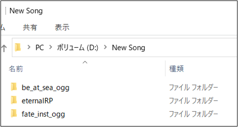
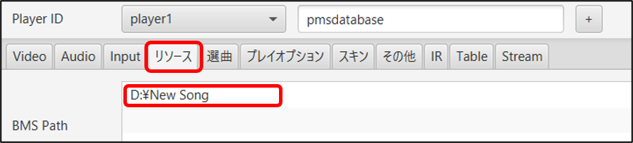
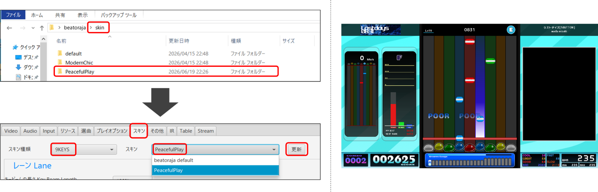
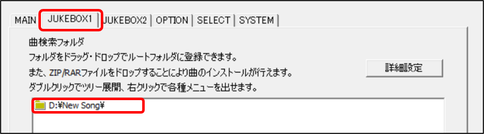
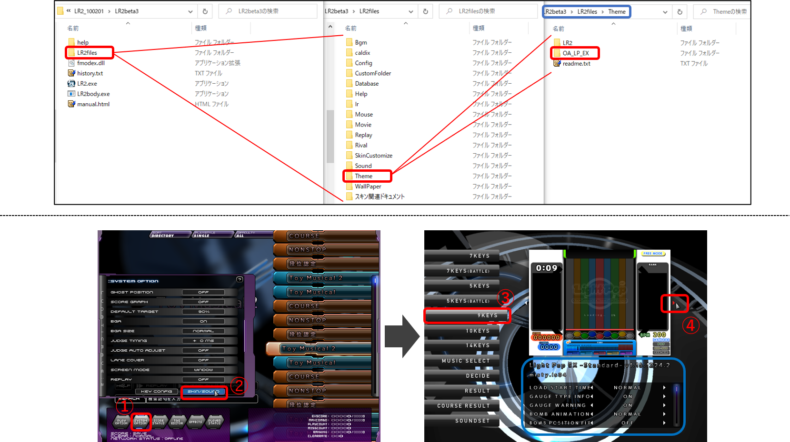

本体プレイヤーに楽曲とスキンを登録し、再生環境を整えます。また、楽曲を効率良く収集・整理するための「難易度表」の活用方法について解説します。
・ beatoraja
- 楽曲の登録 - beatoraja
- スキンの導入 - beatoraja
- プレイスキン - PeacefulPlay
- その他の beatoraja 用 PMSスキン集
- 難易度表の導入 - beatoraja
・ Lunatic Rave2 (LR2)
- 楽曲の登録 - LR2
- スキンの導入 - LR2
- プレイスキン - Light Pop EX
- その他の LR2 用 PMSスキン集
- 難易度表の導入 - LR2
・ PMS の効率的な収集方法について
- パッケージ配布されているPMSを一括導入する
- 発狂PMS難易度表を収集する
- 本体ダウンロード時のアレコレ
- 差分は自動導入機能を使って効率よく収集する
実際に作業してみましょう。「New Song」など適当な名前の親フォルダを1つ仮作成し、PMS Database からダウンロードした作品をいくつか格納しておきます。
【注意】 PMS の再生に必要な 楽曲 / 映像 / 同梱譜面 のまとまったファイルを「本体」、本体のデータをもとに第三者が作った創作譜面のことを「差分」(または単に譜面) と呼びます。
本体と差分の入手先URL が分かれている場合は両方をダウンロードし、差分を本体のフォルダ内に統合してください。

親フォルダを beatoraja-configuration > リソース > BMS Path 画面内に ドラッグ&ドロップ で投入します。
- 曲数が多い場合、登録に時間がかかります。
- 登録済のフォルダに楽曲を追加した場合、beatoraja 起動中に当該フォルダで F2 キー (リロード) を行うと反映されます。
- 追加数が多い場合は beatoraja-configuration > リソース > 楽曲全更新

beatoraja を起動して、再生確認してみましょう。
以降 楽曲データを入手したら、新しくフォルダを登録するか、登録済のフォルダに統合してリロード、を繰り返します。
闇雲にフォルダを増やしていくと管理が大変になるため、用途別、作家別、BMSイベント別… など、系統的に構築していくことをオススメします。
選曲画面やプレイ画面の見た目をカスタマイズできるのがスキンパッケージで、有志の方々により様々に制作、配布されています。
中でもプレイスキンに関してはクオリティに気を遣う方が多くおられると思いますので、筆者イチオシのプレイスキンを実例にしつつ、導入方法を解説していきます。
PeacefulPlay は 2026/06 に公開された新しいプレイスキンで、FHD画質対応、Lua言語製で機能美にも優れたモダンなデザインが特徴です。
上記リンクから PeacefulPlay をダウンロードしたら、beatoraja > skin フォルダ に解凍します。以降も新しいスキンを入手したら、ここに解凍してください。
次に beatoraja-configuration > スキン を開きます。
"スキン種類" に "9KEYS" を選択、すぐ右の "スキン" に "PeacefulPlay" を選択し、[更新] をクリック。これでプレイスキンが切り替わります。

各スキンは固有のカスタマイズ機能を持っており、beatoraja-configuration > スキン画面で細かく設定することができます。
PeacefulPlay のカスタマイズの詳細については公式サイトを確認いただくのが最適ですが、代表的なものだけここでもいくつか挙げておきます。
・ 判定表示 > Fast/Slow 表示 : FAST / SLOW 表示の切り替え
・ レーン > キービームの長さ・レーンの明るさ : 本家の BRIGHTNESS, KEYBEAM, 従来の LOST オプションのように画面内の情報を減らします。10%単位で調節可能
・ ノーツ > ノーツ種別 : ビートポップ (IIDX 風の青白ノート) の切り替え
・ サイドユニット > NOTES CHART : Jubeat のような区間密度と判定分布、FAST / SLOW 分布の表示
・ サイドユニット > KEY LOGGER : キー入力の履歴をその場確認できる機能
・ よくある質問ですが、LIFT, HIDDEN, SUDDEN, GUIDE SE などのオプションはスキンではなく beatoraja 本体の機能として備わっています。
→ 次のガイド記事： コントローラの導入・キーコンフィグと操作方法 > プレイ画面 > 特殊オプションの有効化について で扱いますので、このまま読み進めてください。
■ LITONE5
(2026/06 補足) 当解説記事では長らく LITONE5 プレイスキンを代表例に挙げさせて頂いてきましたが、LITONE5 は公式の配布が停止しており、それに伴って beatoraja のアップデートのたび少しずつバグが増えている状況です。
PMS Database では長期的な視点から、これから新しくPMSを始める方には PeacefulPlay の利用をオススメする方針に切り替えました。
既に LITONE5 を使い慣れている方には申し訳ありませんが、ご理解よろしくお願いします。なおトラブルシューティングには今後も対応する予定です。
■ DotPop
■ Endless Circulation P-Play for beatoraja
■ 【BMS/beatoraja】各種スキン一覧 - Mirai's Station
■ PMS Database の Links > スキン関係
■ スキン一覧 - BMSまとめ @wiki
BMS/PMSにおける「難易度表」とは、単にブラウザで確認できる一覧表というだけでなく、本体プレイヤーと連携できて、所持している譜面を難易度別にフォルダ仕分けしてくれる機能を持ったウェブページ (URL) のような意味で使われる用語となっています。基本的には、難易度表フォルダから譜面を選ぶ機会が多くなるでしょう。
PMS Database で公開している難易度表は全て beatoraja で利用可能です。第一ステップとして、利用したい表のURLを控えておきましょう。
■ PMS Database (Normal Records / Lv1～45) : https://pmsdifficulty.xxxxxxxx.jp/PMSdifficulty.html
■ PMS Database (Insane Records / Lv46～) : https://pmsdifficulty.xxxxxxxx.jp/insane_PMSdifficulty.html
■ Others ページ内にもいくつかの難易度表を用意しています。
■ Links > 難易度表 には、PMS Database 以外で運営されている難易度表 (自作差分一覧表など) をリストしています。
-----
難易度表のURLを beatoraja-configuration > リソース > Table URL に貼り付けて [+] ボタン > 難易度表読み込み (新) を押します。
- 初回の難易度表読み込みを行った後は、beatoraja 起動中に難易度表フォルダで F2 キー (リロード) を押すことでも最新の難易度表情報を反映可能です。
- 難易度表フォルダ内で所持していない譜面は色付き表示となり、選曲しようとすると難易度表に登録されたダウンロードページにジャンプします。
beatoraja を起動し、難易度表の選曲フォルダが増えている事を確認しましょう。
適切な差分を所持していれば、対応する難易度表のレベルフォルダ内に格納されているはずです。
実際に作業してみましょう。「New Song」など適当な名前の親フォルダを1つ仮作成し、PMS Database からダウンロードした作品をいくつか格納しておきます。
【注意】 PMS の再生に必要な 楽曲 / 映像 / 同梱譜面 のまとまったファイルを「本体」、本体のデータをもとに第三者が作った創作譜面のことを「差分」と呼びます。
本体と差分の入手先URL が分かれている場合は両方をダウンロードし、差分を本体のフォルダ内に統合してください。
親フォルダを LR2SETUP > JUKEBOX1 >曲検索フォルダ 画面内に ドラッグ&ドロップ で投入します。
- 登録済のフォルダに楽曲を追加した場合、LR2 起動中に当該フォルダで F8 キー (リロード) を行うと反映されます。
- 追加数が多い場合は LR2SETUP > MAIN > データベース自動更新 > 「起動時に全フォルダに対して行う」にチェック > LR2を起動
- フォルダ登録時に "引数エラー" と表示され読み込みが中断された場合も、一度この方法でリロードしてください。

LR2 を起動して、再生確認してみましょう。(LR2 は楽曲が1つも登録されていないと起動できない仕様となっているので、必ず楽曲登録を行ってください。)
以降 楽曲データを入手したら、新しくフォルダを登録するか、登録済のフォルダに統合してリロード、を繰り返します。
闇雲にフォルダを増やしていくと管理が大変になるため、用途別、作家別、BMSイベント別… など、系統的に構築していくことをオススメします。
選曲画面やプレイ画面の見た目をカスタマイズできるのがスキンパッケージで、有志の方々により様々に制作、配布されています。
LR2 PMSのプレイ画面の場合は "Light Pop EX (LPEX)" スキンがスタンダードとなっているので、導入方法を兼ねて解説します。
Light Pop EX をダウンロードしたら、LR2beta3 > LR2files > Theme フォルダ 内に解凍します。以降も新しいスキンを入手したら、ここに解凍してください。
次に LR2 を起動して SYSTEM OPTION > SKIN/SOUND > 9KEYS > プレビュー画面両サイドの矢印をクリックし、スキンを LR2 STANDARD から Light Pop EX に変更 します。

また、この画面でスキンの挙動を細かく設定することができます。Light Pop EX の場合は 公式マニュアル が非常に充実しているので、ぜひ一読ください。
■ Endless Circulation : Self Evolution
■ Girlish Cafe
■ PMS Database の Links > スキン関係
■ スキン一覧 - BMSまとめ @wiki
BMS/PMSにおける「難易度表」とは、単にブラウザで確認できる一覧表というだけでなく、本体プレイヤーと連携できて、所持している譜面を難易度別にフォルダ仕分けしてくれる機能を持ったウェブページ (URL) のような意味で使われる用語となっています。基本的には、難易度表フォルダから譜面を選ぶ機会が多くなるでしょう。
PMS Database で公開している難易度表は全て LR2 で利用可能です。第一ステップとして、利用したい表のURLを控えておきましょう。
■ PMS Database (Normal Records / Lv1～45) ： https://pmsdifficulty.xxxxxxxx.jp/PMSdifficulty.html
■ PMS Database (Insane Records / Lv46～) ： https://pmsdifficulty.xxxxxxxx.jp/insane_PMSdifficulty.html
■ Others ページ内にもいくつかの難易度表を用意しています。
■ Links > 難易度表 には、PMS Database 以外で運営されている難易度表 (自作差分一覧表など) をリストしています。
----------
取得したURLから、難易度表ツール というソフトを介して仕分け用のフォルダ (カスタムフォルダ) を作成し、それを LR2 に読み込ませます。
■ BeMusicSeeker *(2023/10) 現在アクセス不可のため 非公式インストーラー を使用してください
- 2023年現在 最も主流の難易度表作成ツール
- 初期設定を行った後は、アプリを起動するだけで最新の難易度表データを取得し、LR2 内にカスタムフォルダを作成・同期することができます。
- 非常に多機能です。差分自動導入機能 と フォルダメンテナンス機能 で効率良くPMS収集を行う事ができます (後述)
- その反面、登録作品数が増えると起動にかなり時間がかかります。
- 導入方法は 公式マニュアル を参照してください。特に難易度表の出力操作についての記事は こちら
■ GLAssist *入手できない場合は こちらの保管庫 から
- 動作がとても軽いです。難易度表を更新するだけの目的であれば非常に取り回しが良くて便利
- BeMusicSeeker に比べて限定的ではあるものの、差分自動導入機能 が利用できます (後述)
- 導入方法は BMSユーザ総合支援ツールGLAssistを使ってみる 記事を参照してください。
- (補足) 手順に沿って出力された "custom folders" というフォルダを、LR2SETUP > JUKEBOX1 の 曲選択フォルダ に追加してください。
LR2 を起動し、難易度表の選曲フォルダ (custom folder) 内を確認しましょう。
適切な差分を所持していれば、対応する難易度表のレベルフォルダ内に格納されているはずです。
これ以降は「難易度表」を眺め、遊んでみたい PMS の「本体」「差分」をダウンロードし、本体プレイヤーに登録する、という作業を繰り返すことになります。
…が、いま膨大な作業量を想像されたことでしょう。どこから手を付ければよいか分からなくなって、やがて面倒になって遊ぶのを諦めてしまいそうです。
そこで、これから PMS に触れ始める方を想定し、収集の指針を少し示してみることにします。
次の作品群は公式パッケージでの導入を推奨しています。まとまった数の PMS が確実に入手できるので、一番最初に作業してしまうのがオススメです。
■ Toy Musical (TM) / Toy Musical 2 (TM2)
(1) 「Toy Musical 2 Full」をダウンロードして解凍
(2) 「Toy Musical 1 (修正差分適用済)」をダウンロードし、中にある「Toy Musical」フォルダの中身を (1) で解凍した中にある同名フォルダに統合
(3) Toy Musical 非公式 パッケージ1 パッケージ2 パッケージ3 をダウンロードし、同様に (1) のフォルダに統合
(4) 以上の統合作業を済ませた「Toy Musical」「Toy Musical 2」を 本体プレイヤー に登録
■ Colorful Canvas (CC) / Colorful Channel (CC2)
- フルパッケージを解凍した中にある Bms > 「Colorful Canvas」「Colorful Channel」を 本体プレイヤー に登録
- 一部楽曲は解禁が必要です。コラム - PMSパッケージ "Colorful Channel" 導入ガイド &コンテンツ紹介 に必要な作業をリストしましたので、参考にしてください。
■ 四季PMSイベントパッケージ
(S9R2011 /
S9F2012 /
A9S2013 /
W9F2015 /
S9B2020 )
- 「…_Appends.zip」となっているファイルは、対応する本体パッケージに統合してください。
■ BOFPMS差分企画
- 最大規模のBMSイベント「BOF」の開催に合わせて毎年行っている、PMS創作差分のパッケージ企画です。
- 導入方法はリンク先(ポータル) や各開催年度ごとの解説を参照してください。
- 他のパッケージに比べてファイルサイズが巨大です。全てDLする場合、ストレージに数百GBの空き領域を確保しておくことをオススメします。
- 高難易度譜面の割合が高い傾向があります。
■ PASTORAL(UPPER) - 発狂PMS難易度表 for beatoraja
発狂PMS難易度表はユーザーから支持を得た譜面の集合です。1曲ずつ収集する手間を考えても、取り組む価値は高いのではないでしょうか。
プレイヤー数が比較的多く、統計を取りやすいことも魅力となっていますので、積極的に IR に参加されることをオススメします。
万一リンク切れしているという場合は、ミスなどの報告 (Google スプレッドシート) に一報ください。解決できない場合もありますが、極力善処します。
発狂PMS難易度表の収録作品は所持されている方が多いので、コミュニティでお願いすれば譲って頂けるかもしれません。
有志による非公式パッケージが存在するかもしれません。表立って推奨するものではないですが、「PMS(BMS)保管」「PMS(BMS)パッケージ」 といった検索は強力な手段です。
・ ダウンロードリンクが wav / ogg 版と分かれている場合
- ogg 版の方が若干低音質ですが、ファイルサイズが非常に小さくなるため主流となっています。どちらか片方を選んでダウンロードすればOKです。
- 差分ファイルは wav / ogg 版どちらの本体に統合しても問題ありません。
・ BGAファイルが wmv / mp4 版と分かれていたり、mp4 ファイルが個別に配布されている場合
- beatoraja での再生が中心になる場合は mp4 版を選択してください。LR2 の場合は mp4 ファイルが再生できない場合がありますので注意してください。
・ 解凍ソフトについて
- > BMSの解凍には Explzh がおすすめです！ (2015年上半期ベストBMS解凍ソフト より)
- ただし Explzh はやや動作が重いので、パッケージの解凍にお手軽な 7-Zip や、RAR圧縮の展開が圧倒的に早い WinRAR を使い分ける手もあります。
- Lhaplus はファイル総数が多くなると解凍不良を起こす場合があるので、BMSの解凍に使用するのは非推奨です。
・ BMSイベントで配布された本体パッケージが多数アーカイブされているサーバー
■ BeMusicSeeker Unofficial Fork
- ユーザーマニュアル
- ダウンロード先が分かりづらい場合： このページ 下部の Assets > bemusicseeker-unofficial-fork-vX.X.X.X-with-metadata.zip です。
BeMusicSeeker (BMSeeker) はBMSの総合管理ツールで、こと沢山の楽曲で遊びたい、色々な難易度表を楽しみたいという方にとっては必携のアプリケーションです。
本体BMS や PMS差分をまとめてドラッグ&ドロップすると、所持状況や統合先を推定し、自動的にインストールしてくれる機能が備わっています。これを使い倒します。
2026/06 以降、こちらのフォーク版は (LR2 に依存しない) スタンドアローンで動作するようになりました。beatoraja 向けの機能も追加されつつあるので、ぜひ導入してください。
自動導入機能の備わっているその他のツール集 (旧記事)
■ BeMusicSeeker (従来版)
- 公式マニュアル 「BMSファイルのインストール」 フォルダ整理したい場合は 「BMSファイルのメンテナンス」
■ GLAssist
- 公式マニュアル 「差分導入機能」
■ BmsManager
- ダウンロードは Releases より
-----
PMS Database を大規模に収集したい場合は、次のような手順が効率的と思われます:
(1) BMSイベントパッケージ等を利用し、出来る限りの本体BMS を LR2 / beatoraja に登録しておきます。
(2) 差分ファイルを一か所に収集します。Links > PMS差分公開サイト も活用してください。
(3) 集めた差分ファイルを BMSeeker にドラッグ&ドロップで投入してインストールします。